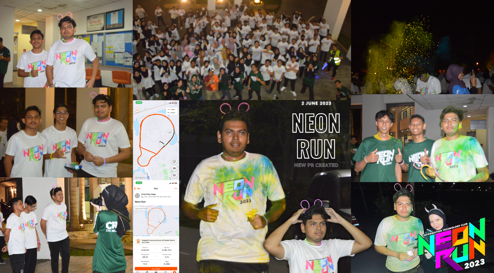

Campus Life
HASiL Your Tax Buddy Program

On October 24, 2023, the "Hasil Your Tax Buddy" (HYTB) program at the state level in Johor was successfully conducted through a collaboration between the Johor State Revenue Board (HASiL Negeri Johor) and Universiti Tun Hussein Onn Malaysia (UTHM) in Batu Pahat, Johor.
The main objective of the program is to disseminate tax education and awareness through the concept of Awareness, Education, and Services (AES) among students from public and private higher education institutions (IPT) throughout Malaysia. The program targets IPT students who are potential taxpayers to make them knowledgeable about taxation and, ultimately, responsible taxpayers.
A total of 96 participants attended this program. The attending students were provided with an introduction to taxation in Malaysia through a briefing called "Siswa Niaga Bijak Cukai" delivered by En Amirul Asyraf Bin Abu Bakar from the Customer Service Section of Johor State. The students also had a quiz session using Kahoot to assess their understanding of taxation.
The program continued with a Taxplorace activity, where the Flag-off session for the students was inaugurated by the Director of Johor State LHDNM, Puan Shifaak Binti Md. Amin, together with the Deputy Vice-Chancellor (Student Affairs & Alumni) of UTHM, Prof. Sr. Ts. Dr. Hj. Lokman Hakim Bin Hj. Ismail, at the Tunku Tun Aminah Library, UTHM. The Flag-off for Taxplorace was lively, featuring cheers, flag waving, and gimmicks using a robot specially designed by UTHM's makerspace incubator officers.
The program concluded with a closing ceremony officiated by Pn Shifaak Binti Md. Amin, the Director of HASiL Johor. Also present were Prof. Madya Dr. Siti Sarah Binti Omar, Deputy Director of UTHM's Entrepreneurship Center, and Encik Hisham Bin Maarof, State Operations Director (Customer Service Section) of HASiL Johor.
Clean Our Mountain : Gunung Angsi

"Clean Our Mountain: Gunung Angsi" was a remarkable program organized by the Information Technology Club (ITC) of the Faculty of Computer Science and Information Technology (FSKTM) at Universiti Tun Hussein Onn Malaysia (UTHM).
On the 14th of October, 2023, 40 enthusiastic participants, including hikers and environmentalists, embarked on a journey to Gunung Angsi, not only for the thrill of hiking but with a noble mission to protect and preserve the natural beauty of this magnificent mountain.
ITC Neon Run 2023
On the cool evening of June 2, 2023, a vibrant atmosphere buzzed with excitement as participants gathered to partake in the highly anticipated Neon Run. The event, organized by the Information Technology Club, a dynamic club under the umbrella of the Faculty of Computer Science and Information Technology, promised an exhilarating experience for all those involved.
As the clock struck 9:00 p.m., the starting signal echoed through the air, igniting a surge of energy among the participants. Among them was myself, eager to embark on this 5-kilometer journey through a neon-lit course that wound its way through the heart of the city. Clad in comfortable sportswear, adorned with neon accessories, I was ready to join fellow enthusiasts in a night of fun, fitness, and camaraderie.
Sheepman Storytelling Project

In the world of university projects, teaming up with classmates to create something educational and fun is truly fulfilling. That's exactly what happened when I and my fellow classmate worked on our English Development and Engagement project – a storytelling endeavor called "Sheepman." Our journey began in June 2023, taking us through the exciting process of crafting characters and weaving a captivating tale.
Our project revolved around a unique character named "Sheepman," who was a mix of human and sheep traits, going on a whimsical adventure. This interesting character was a perfect way to share ideas about identity, self-discovery, and embracing uniqueness. Using our creativity, we aimed to craft a story that entertained and also gave meaningful insights to our audience.
I took on the role of "Sheep," the main character. Getting into the sheep's mindset, I embraced the role and explored the mix of sheep and human qualities. Meanwhile, my groupmate narrated the story and portrayed various supporting characters, adding dynamic depth to the Sheepman's persona.
Our project journey was full of excitement and some challenges. We started by carefully writing the script, selecting words that painted vivid pictures and emotions. Every scene was designed to move the story ahead while keeping our main message intact.
Kompang Making with Laser Cut in Parit Raja

Kompang making, an age-old tradition in Malaysia, holds a special place in the hearts of many. It's not just a cultural practice, but also an art requiring skill, precision, and dedication. Recently, my group and I delved into kompang making through a documentary project in Parit Sumarto, Batu Pahat. Under Encik Mokhtar's guidance, owner of Perusahaan Kompang dan Jidor Mokhtar, we learned the intricate process of crafting these traditional instruments.
From wood selection to shaping components, we witnessed meticulous work in creating each kompang. Encik Mokhtar's dedication and passion amazed us. This craft is not only entertainment but also unity and tradition. Completing the documentary, we appreciated kompang making. Taking it further, we collaborated with Encik Mokhtar to merge modern tech with tradition, using laser cutting for intricate designs on the kompang. A laser-cut kompang became a unique tribute to our lecturer, Madam Amilia. Guided by Encik Mokhtar, we succeeded in this fusion of traditional and modern. Presenting it to Madam Amilia showed our gratitude for her support.
Our journey into kompang making in Parit Sumarto was educational and inspiring. It taught us about cultural heritage and innovative preservation. This blend of craftsmanship and technology symbolizes appreciation for past, present, and future. These processes occurred on May 27 and 28, 2023.